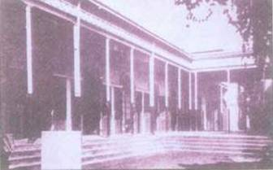
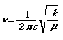
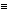
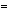
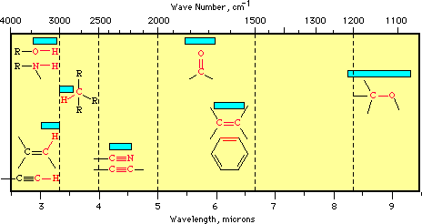

|
|
|
|
|
|
|
|
|
|
|
|
|
|
||||||||||||||
|
|
||||||||||||||||
|
|
|
Sir CV Raman: The man
and his effect: Published on February 13, 2007
[Recently Avijit wrote an excellent article on Sir CV Raman and his effect in his latest book “Alo Hate Chaliyach e Andharer Yatri’. I was reading it and got inspired to write this piece. For long time, I was reading a lot of articles and collection of his papers and therefore, I thought I might bring some interesting light into his invention. My effort might be useful for the readers of our forum to appreciate Raman Effect and the way it is still changing the world. ]
Professor Raman brought his ticket to Europe in 1929 to attend the Nobel Prize awarding ceremony in 1930, indeed a year earlier before he was declared for the prize. Such was the confidence of this great man, that after seeing the effect in Feb,1928 and declaring it in a conference on 16th March, 1928, he had no doubt in his mind that he is going to be recipient of Nobel prize in physics in 1930! Surprisingly physics world was in unison with his claim (Appendix A: Politics of Nobel prize in 1930)! In the history of Nobel Prize, nobody was awarded Nobel Prize so quickly after their major contribution. On average it takes a decade to recognize the merit of any discovery. But in Raman’s case it was an exception and sometimes I have been puzzled by the fact, how come Raman was so confident about his wining in 1930 when revolutionary contributions in physics discovered much before Raman effects have not been awarded till that time! That includes Heisenberg (who discovered the famous uncertainty principle in quantum mechanics and also credited for Matrix operator approach in quantum mechanics. He was awarded Nobel in 1932. Raman defeated Heisenberg by 6 to 1! See appendix), Schrödinger (Famous Schrödinger equation that led first theoretical foundation of quantum mechanics. He was awarded Nobel in 1933 with PM Dirac) and PM Dirac (The man who founded relativistic quantum mechanics and led the foundation of interaction of light with electrons)! Indeed, Raman defeated Schrödinger, Dirac and Heisenberg in 1930 who were also nominated for Nobel Prize in physics for the year of 1930 as you will find from the appendix.
For long time, this was a puzzle to me. I knew Nobel committee was under obligation to respect Nobel’s original will - merit of application to mankind should be the first priority. However that didn’t make it clear to me why Raman Effect was a ‘killer discovery’ for human civilization so that it was merited above Schrödinger’s wave equation or Heisenberg’s uncertainty principles! It took me quite a while to break this puzzle.
Chapter 1: The history of the discovery
Science College 1928: Before we break the puzzle, we will walk down the lane of 210 Bow Bazaar Street in Calcutta where Prof CV Raman was carrying out his experiments on scattering of light by liquid from 1918, after the foundation of Indian cultivation of science in the same year. It was the glorious time for Calcutta University—in its newly founded post graduate physics department, faculty includes Sir CV Raman, SN Bose, MN Saha and SK Mitra. Later in their careers, all of them would be elected as a fellow of Royal Society. For a brief period of two decades, Calcutta was the most intense site for fundamental research in science outside Europe. Even in Europe, except for centers of excellence like University of Gottingen in Germany, University of Oxford and Cambridge, London University and So bourn University in Paris, Calcutta University has no parallel. When I was looking at what was going on in MIT, Harvard and Princeton University between 1910-1930, I really felt proud that for a brief period, research in cultivation of science in Calcutta, exceeded the standard of these famous University chain in USA. Unfortunately we could not keep the standard up because of socio-economical dynamics between science and the society. Continuation of excellence in science needs Buddhist model—Dharma (the belief in their own standard of science), Buddha (the great teachers of science) and Sangha (The university system and its students who will be the next generation of teachers). We never had a shortage of students or teachers but our Sangha, University system has continuously faltered. Not that Neheru didn’t take enough initiative to fund money for science. Indeed he did. Council of Industrial and Scientific Research (CSIR), Defense Research and Development Organization (DRDO), Indian Institute of Technology (IIT), Indian Institute of Science (ISc), Department of Atomic energy (DAE) and Indian Space Research Organization (ISRO) are all ‘dreams come true story’ for Neheruvite socialism. But none of the organization could repeat a Raman story! Reason is deeply lying in Neheruvite socialism itself. Today MIT, Stanford, Princeton are center of excellence in Science and technology because it receives huge grant to develop new technology from Defense organizations (DARPA) and contractors like Boeing, Lockheed Martin ( company that manufactures F16/18), General dynamics etc. Where as in India, from its beginning, DRDO is crippling to develop new science and technology thanks to the fact that greedy Generals and defense ministers were more interested to pocket billions of dollars worth of Russian commission for arms sale rather than proliferating commercialization of Defense research like in UK and USA. During Second World War all the greatest technologies were developed by commercial companies who generally hold a much higher degree of accountability of delivery. Quite naturally, DRDO/DAE has no accountability in delivery and as a consequence, most of scientists in DRDO/DAE are more interested in trading stocks than doing research (when I was a trainee in Saha Institute of Nuclear Physics, I was appalled by some of its scientists who were more involved in their personal business than science). Strength of fundamental research in an institute can be gauged from the excellence of its mechanical workshop—and not by its latest state of the art instruments. That’s why once former director of IIT-Kharagpur shouted his frustration in convocation- “IIT has every equipment to do state of art research but for last four decades we have not produced any innovation that is worth mentioning to the world like Prof Raman did proudly on 28th February in 1928!''
 210 Bow Bazaar Street: Place of discovery
Why a second Raman in India is unlikely?
Indian scientists neglected the most important teaching of Raman that his student K S Krishnan wrote in his diary --“ Professor always tells me that it is not good for a scientists to be out from the laboratory for a long time and doing theoretical research only “. This has exactly happened to Indian science, it has moved from laboratory to theoretical hypothesis. Reason is simple. In general defense and medical fields are greatest consumer of latest discoveries in Physics and Chemistry. Due to lack of defense and medical development, there is no outlet for Indian discoveries and innovations. In USA, story is opposite. Venture capitalists are wielding their dollars to convert even the simplest innovation from MIT and Stanford to gold. Quite naturally in USA, thinking of the scientists are always occupied by commercial landscape and in India for a long time, scientists lacked objectives other than publishing papers. This has led to gradual degradation of the position of scientists in Indian society. We can not imagine that Tagore is raising fund for research of Prof J C Bose in this century. Indeed, in his own words to King of Tripura, Tagore took pride to be a beggar for Prof JC Bose. Quite naturally, when I opted for Physics instead of Engineering in 1991, my parent thought I have gone out of my mind. Due to the reduced status of the scientists in the society in the sub-continent, only the students who can not get through Engineering schools are studying science! The trend has affected the quality of science in India.
Indigenous set-up from workshop of Howrah!
So, it is extremely important to understand what Raman and his group was doing by building their own equipments from numerous unskilled workshops of Howarh. Strong sunlight is passed through a big aperture of a telescope and then focused on a hole to collimate the light—to make it a straight pencil beam. Raman and his students were using colored crystal and grating to make the beam mono-chromatic (means light with only one wavelength)—a very rudimentary technique. Then this beam was allowed to pass through liquid. Typically, if a spectrometer (an optical instrument that breaks the light into all of its colors or wavelengths) is placed at 90 degree angle of the beam and from beam and liquid cross section, a faint scattered light can always be found which is typically 1/1000 times weaker than the original beam if the liquid is very pure without any solid particles. However, this faint beam has same wavelength as that of original beam that has fallen on the liquid. So it is as if, light has been scattered by the molecules. In classical theory of electromagnetism, the scattered and incident light should have same spectrum. Or in more simple words, green light will scatter green only; blue light will scatter blue only!
Raman could not understand Raman Effect in 1922!
In 1922, one of Raman’s PhD student Ramanathan observed a faint green glow in the scattered light when the original beam was blue. This is exception to what his group knew at that time. However, he was carrying out experiments on effect of magnetic anisotropy of the liquid and was never expecting anything like this kind of green faint light. He actually saw the Raman Effect but he thought it is fluorescent ( A phenomena where light absorbs a color say blue and then emits a characteristic color say green). However this light was highly polarized and can not be from fluorescent. Raman and Krishnan saw this phenomenon as well, but due to the lack of knowledge of quantum scattering, they turn their suspicion on impurity of the incident blue beam. However this spurious green light remained a mystery till Compton announced his epoch making experimental results that X-ray scattered by electron has an interesting property which can be explained only through the newly developed subject of quantum mechanics. Compton proved that wavelength of the X-ray get modified by both the bound and free state of the electron. Something that can be explained only if light is considered as a particle like photon colliding with certain energy with electron and electron is altering the energy of the photon as a result of collision!
Inspired by Compton Effect:
Raman immediately got interested in Compton Effect and indeed set up an experimental arrangement to observe Compton Effect as early as in 1923 using an entirely different concept. In Dec 1927, Compton was awarded Nobel Prize in Physics. In the same day, the news was published in evening chronicle of Calcutta. As per K S Krishnan’s diary, Professor grabbed the paper and run into the laboratory
“But look here Krishnan, if this is true of X-rays, it must be true of light too. There must be an optical analogue to the Compton Effect. We must pursue it..”
. KS Krishnan was actually involved in the study of magnetism but Raman told him to dig the faint green scattered light that they have failed to explain for a long time. Raman was sure, since X-ray is nothing but an electromagnetic wave, similar phenomena should also happen in liquid in visible domain since electrons are loosely bound in liquid! And he wanted to see the end of the enigma of feeble green scattering. On 16th March 1928, while explaining this new effect for the first time, he announced “ Early this year, however, a powerful impetus to further research was provided when I conceived the idea that the effect was some kind of optical analogue to the type of X-ray scattering discovered by Professor Compton, for which he recently received the Nobel Prize in Physics. I immediately undertook an experimental re-examination of the subject in. collaboration with Mr K.S. Krishnan and this has proved very fruitful in results.
Re-examination of a green light!
The ‘experimental re-examination’ started in January 1928. During the same month, Venkateswaran was studying the phenomenon of light scattering in highly viscous and magnetic liquid. While experimenting with glycerin, he made the same observation again- that the blue filtered sunlight scattered in a highly purified sample of the liquid was green instead of the usual blue. Tests with different filters transmitting narrow regions of the solar spectrum showed that in every case the scattered light was different in color from that of the incident beam. Moreover, the scattered radiation appeared to be polarized.
As we saw before, Raman was sure that he is observing optical equivalent of Compton Effect and prevailed upon Krishnan to undertake a thorough investigation of the phenomenon, drawing him away from the theoretical problems he was busy with at the time. Since sunlight was the principal incident source they were using and since Venkateswaran, a part-time worker at the laboratory could only devote time early in the morning or late in the afternoon, the responsibility of carrying on with the experiments fell on Krishnan’s shoulders. The Raman Effect was discovered on 28 February 1928. It was a tireless pursuit lasting about four to five weeks and in the end was a great experimental discovery, yet to be matched in contemporary Indian science. Krishnan kept a record of the events in the form of a diary. The diary contains an elaborate day-to-day account of the quest that ultimately led to this discovery. We reproduce below the transcribed text of the original diary [Source—Diary of K S Krishnan by DCV Mallick]. I am adding my note to explain to the common readers to appreciate his diary which is one of the most authentic literatures of how a discovery was made. It is as interesting as a suspense novel.
History of the February 1928: Through K S Krishnan’s diary
“Sunday, 5 February 1928 : For the last three or four days I have been doing some experimental work on the fluorescence of organic vapors. For a long time past I haven’t done any systematic experimental work; in fact, the last experiment I did was the one on the magnetic double refraction of nitric oxide, in the summer of 1926. Since then, I have been exclusively confined to my desk excepting for a short period of about a week last March when I set up the X-ray tube for investigating X-ray scattering by gases, which however was left uncompleted, first because we had some interesting problems in magnetism (viz. anisotropy of crystalline nitrates and carbonates), and second, because, Dr Sethi who was to work in our laboratory during the summer holidays on X-diffraction in liquids at high temp[eratures], had no spare Shearer tube to work with. As Prof[essor] says, it is not quite healthy for a scientific man to be out of touch with actual experimental facts for any length of time and it was specially to keep myself busy with some experimental work that Prof[essor] asked me to take up the subject, though the period has been extremely fruitful regarding my scientific output—in fact all our work on electric and magnetic double refraction, magnetic anisotropy of crystals, diffraction by metallic screens, and the series of three papers modifying the Langevin theory of electric and magnetic double refraction, the Lorentz–Debye theory of refraction and dielectric polarization and the Ramanathan theory of light scattering and the Phil. paper on the theory of the Maxwell effect in liquids………
(Author’s note: This diary is awesome. It shows mindset of K S Krishnan that he is still under impression that the unwanted green light is fluorescence and not something like Compton Effect as Ranan was insisting. It also shows he was working on theoretical magnetism and Professor pulled him out of his theoretical work and put him to investigate what he thinks equivalent of optical Compton Effect. His deep respect for professor can not be unnoticed in this diary)
……Still one must agree with Prof[essor] that it is not quite healthy for a scientific man to be out of touch with actual experimenting for any length of time. It was mainly with a view to start immediately some experimental work that I took up (at the suggestion of Prof[essor] the general problem of the fluorescence of organic vapours; rather than from the pressing nature of any specific problem in the subject awaiting experimental solution, which usually draws a man to a new field. In fact the paper on the exp[erimental] evidence for the anisotropy of the polarisation field, which I proposed to write jointly with Ramachandra Rao, and which we partially wrote together when he was here for the Science Congress last month, is not yet completed
(Author’s note: He does not look convinced by Raman’s explanation that this might be optical equivalent of Compton’s effect. Indeed, he still thinks it is a fluorescence attributed to anisotropic magneto-optical property of the liquid)
I have also spent a week or more on trying to give a theory of the Jamin effect, and also in finding out whether in the photographs taken long ago by Prof[essor] of thin soap bubbles placed between crossed nicols, there is any evidence of double refraction of the film . The latter two will require some more time. However I have thought it best to leave off the desk straight way and begin the experimental work; and accordingly for the last three or four days I have been devoting all my time to fluorescence. Also the subject promises to open out a wide field for research, since at present there is no theory of fluorescence which could explain even the outstanding facts.
(Author’s note: Later on there was controversy on Raman’s Nobel as to whether Krishnan had legitimate claim to it since he observed the phenomenon first. This diary proves the conception that Krishnan first saw the effect is not correct. Indeed, they were re-investigating a phenomenon seen by Ramanathan and Venkateshwaran based on Raman’s assumption that something like Compton effect is in play.”)
Studied anthracene vapour. It exhibits strong fluorescence; which does not seem to show any polarisation when viewed thru’ a double image prism. Prof[essor] has been working with me all the time. Received today the proof of our Phil. Mag. paper on the theory of the Maxwell effect. Recently Prof[essor] has been studying with Mr Venkateswaran the fluorescence exhibited by many of the aromatic liquids in the near ultraviolet region present in sunlight and the fluorescence of some of the liquids was found to be polarised. However in view of the fact that the fluorescence of anthracene vapour does not show any polarisation Prof[essor] has asked me to verify again his observations on the polarisation in some of the liquids. Monday, 6 February 1928 When Prof[essor] went to Bangalore about a fortnight back in connection with the meeting of the Indian Institute of Science I had been to the station and in the course of our conversation told him that Dr A.L. Narayanan suggested to me that I might write to the Madras Univ[ersity] for exemption from the three year limit for applying for the Doctorate and asked him, if he might happen to meet the Syndicate members at Madras to consult them on the matter. Prof[essor] told me today that he called on the Vice Chancellor Sir Venkataratnam but couldn’t meet him. However he says that Sir Venkat has written to him a very nice letter inviting him to deliver a lecture under the auspices of the Univ[ersity]. That would give him an opportunity to write to Sir Venkataratnam and that he would refer to my case. He took from me a detailed account of my academic career. Incidentally Prof[essor] mentioned that if the Univ[ersity] arranged for a regular course of lectures instead of a single lecture he would like to take me with him…
(Author’s note: K S Krishnan never received his MSc degree through examinations because he was too busy in research from the beginning. By 1928, Raman is the best known physicist of the country and he came forward to rescue his student. Understanding the local Bengali politics which was always against his group, would not allow K S Krishnan to get a formal degree in master in science from Calcutta University, he pulled his weight to get a MSc degree in Physics from Madras University for KS Krishnan. It is worthwhile to notice that there was no Bengali student in Raman’s group despite he was in Calcutta and Palit professor of Physics. In India, the tradition of power struggle in science between Tamil Bramhins and Bengalis is continuing till today. 95% of the Indian scientists are either Tamil or Bengali or Marathi ! )
Tuesday 7 February 1928:
Tried to verify the polarisation of the fluorescence exhibited by some of the aromatic liquids in the near ultraviolet region. Incidentally discovered that all pure liquids show a fairly intense fluorescence also in the visible region, and what is much more interesting all of them are strongly polarised; the polarisation being the greater for the aliphatics than for the aromatics. In fact the polarisation of the fluorescent light seems in general. to run parallel with the polarisation of the scattered light, i.e. the polarisation of the fluorescent light is greater the smaller the optical anisotropy of the molecule. When I told Prof[essor] about the results he wouldn’t believe that all liquids can show polarised fluorescence and that in the visible region. When he came into the room, I had a bulb of pentane in the tank blue with violet filter in the path of the incident light, and when he observed the track with a combination of green & yellow filters he remarked ‘you don’t mean to suggest, Krishnayengar all that is fluorescence?!’. However when he transferred the green yellow combination also to the path of the incident light he couldn’t detect a trace of the track. He was very much excited and repeated several times that it was an amazing result. One after another the whole series of liquids were examined and every one of them showed the phenomenon without exception. He wondered how we missed discovering all that five years ago.
[ Author’s note: This is the most interesting part of the diary. Look at the last sentence. Raman agreed that they have neglected the faint green scattered light for a long time. Not only him, other workers in Europe also saw the same polarized fluorescent but nobody had vision of Raman to identify the phenomenon as a separate effect similar to Compton Effect.]
After meals at night Venkateswaran and myself were chatting together in our room when Prof[essor] suddenly came to the house (at about 9 p.m.) and called for me. When we went down we found he was very much excited and had come to tell me that what we had observed this morning must be the Kramers–Heisenberg effect we had been looking for all these days. We therefore agreed to call the effect modified scattering rather than fluorescence. We were talking in front of our house for more than a quarter of an hour when he repeatedly emphasised the exciting nature of the discovery.
[Author’s note: So for the first time Krishnan was convinced by Raman that the effect they have seen is not fluorescence but new scattering phenomena!]
Wednesday 8 February 1928: Took some preliminary measurements of the polarisation of the modified scattering by some typical liquids. Thursday 9 February 1928 Set up this morning the big telescope and made preliminary arrangements for observing the effect with vapours. Before the arrangements were complete Prof[essor] left for the College for his lecture. In the afternoon tried Ether vapour and it was surprising that the modified radiation was very conspicuous. Tried a number of others in quick succession without however the same success.
When Prof[essor] came from the College at about three, I announced to him the result, and there was still enough sunlight for him to see for himself. He ran about the place shouting all the time, that it was a first rate discovery, that he was feeling miserable during the lecture because he had to leave the exp[eriment], and that however he was fully confident that I wouldn’t let the grass grow under my feet till I had discovered the phenomenon in gases. He asked me to ‘call in everybody in the place to see the Effect’ and immediately arranged in a most dramatic manner, with the mechanics to make arrangements for examining the vapours at high temperatures. Told Mr Sogani that it was for him now to make his temp[erature] influence on the Compton effect as great a success. Evening was busy preparing the hot bath and I didn’t go out. When Prof[essor] returned after his walk he told me that I ought to tackle big problems like that and asked me to take up the problem of the exp[erimental] evidence for the spinning electron after this work was over. Told Mr Venkateswaran about the discovery and was discussing the problem with us, in the course of which he said that the phenomenon should be called the Raman–Krishnan-Effect. Mr Venkateswaran or somebody will call it by that name. Incidentally he remarked that nothing was now beyond my reach referring to the Fellowship of the Roy[al] Soc[iety] and that I might probably get the Fellowship before I got my Doctorate. He instanced in a manner most flattering to me, the case of Ramanujan who was only a B.A. when he got the Fellowship.
[Author’s note: Last paragraph is getting interesting. Raman wanted to call this newly discovered phenomenon as Raman-Krishnan effect though unfortunately Krishnan was left out! By 12th February, Raman boosted his student that his latest invention is worthy of giving him a seat in Royal society though he didn’t receive his doctorate yet. Also, it shows Raman as an inspiring guide who can install high ambition in his student to achieve only the best! Also it shows Raman was methodical. it can be seen in liquid, it must be observed in gas. So Raman was clear. Krishnan has to carry out his experiments to its logical conclusion.]
10–15 February 1928 : Studied a number of vapours. Though a number of them showed the effect nothing definite could be said regarding the polarisation of the modified scattering
Thursday 16 February 1928: Studied today pentane vapour at high temperature and it showed a conspicuous polarisation in the modified scattering. We sent a note today to Nature on the subject under the title ‘A new type of secondary radiation’.
Friday 17 February 1928: Prof[essor] confirmed the polarisation of fluorescence in pentane vapour. I am having some trouble with my left eye.
[Author: Krishnan works so intensely and so passionately, he nearly harmed Cornea of his eye. Constant exposure to strong radiation leads to temporary blindness ]
Did Krishnan deserve the Prize? Raman demonstrated the effect before the distinguished member of the cultivation of science on 28th February. Also, this diary proves beyond doubt that K S Krishnan just worked as instructed and Raman had the original idea. So, K S Krishnan can not be said to have discovered the effect since Raman conceived it first. Not only that, even after Raman explained to him what to except, from diary it is clear that Krishnan didn’t have enough understanding of Compton effect because Magnetism was his subject and Quantum mechanics was last in his imagination. In the book, Alo Hate Chaliyache Andharer Yatri, Avijit narrated the story of Krishnan and Raman in great details.
Ok. We learned in great details how Raman and his group observed a green light instead of blue light in the scattered spectrum. So what? Even if it is new, how it can be so great that it has to be merited above Schrödinger’s equation?
How Raman Effect changed the Organic chemistry Answer lies in understanding vibrational spectroscopy of organic compounds that is typically observed in infrared domain (IR). Study of infrared spectroscopy in 1930s was nearly impossible since Infrared spectrometry is extremely difficult and till today, it is under-developed subject. However, Raman scattering opens a new area in spectroscopy where information embedded in IR spectroscopy can also be obtained from Raman spectroscopy but from its UV-VIS (ultraviolet-visible) study which is a developed subject. But why IR spectroscopy is so hot? Simple to understand. All the chemical bonding in organic and inorganic substances is essentially a kind of small vibrational string that holds together two atoms. This bonding can only be understood from its vibrational spectrum that is typically in IR domain. Hence discovery of Raman Effect gave unprecedented powerful tool to understand structure of bonding in the molecules which was otherwise impossible to carry out using IR spectroscopy directly! It won’t be prudent to say, early development of organic chemistry before the discovery of NMR (nuclear magnetic resonance), owes its progress to Raman spectroscopy.
Raman Lasers and Amplifier: Longest lasting active research topic in Physics I In recent decades, Raman scattering become important phenomena with the discovery of Raman scattering in optical fiber- that gave birth to two very important discovery of last decade. Fiber Raman laser and Fiber Raman amplifier. Both the devices outperformed its traditional competitors for various reasons. Right now all the long distance trans-oceanic fiber optic cable are using Raman amplifier to amplify its signal because it has much better signal to noise ration over its traditional rival Erbium Doped Fiber Amplifier (EDFA). Eventually Raman amplifier will replace all the optical amplifiers over next two decades in Fiber optic networks – or backbone of our communication system. Unlike photoelectric or Compton Effect, Raman scattering remains an ever green subject to build new device using non-liner optics of Raman scattering. Its remains the most potent effect to be utilized in building future all optical computing or Quantum informatics. In terms of diversity of applications and potential for future use, Raman Effect is only compared to discovery of laser and nuclear magnetic resonance (NMR) in the last century. A summery of application is listed in Appendix B:
However, we will be able to appreciate Raman Effect a lot better if we go through a little bit of basics of Vibrational spectroscopy.
Chapter 2: Understanding Raman Effect
Basic of Vibrational Spectroscopy:
Understanding the region of the infrared spectrum which is of greatest interest to organic chemists is the wavelength range 2.5 to 15 micrometers (µ). In practice, units proportional to frequency, (wave number in units of cm-1) rather than wavelength are commonly used and the region 2.5 to 15 µ corresponds to approximately 4000 to 600 cm-1. Absorption of radiation in this region by a typical organic molecule results in the excitation of vibrational, rotational and bending modes, while the molecule itself remains in its electronic ground state.
Fig: Different vibrational mode of water molecule: Red and white represent Hydrogen and Oxygen atoms.
Molecular asymmetry is a requirement for excitation by infrared radiation and fully symmetric molecules do not display absorbances in this region unless asymmetric stretching or bending transitions are possible. For the purpose of routine organic structure determination, using a battery of spectroscopic methods, the most important absorptions in the infrared region are the simple stretching vibrations. For simple systems, these can be approximated by considering the atoms as point masses, linked by a 'spring' having a force constant k and following Hooke's Law. Using this simple approximation, the equation shown below can be utilized to approximate the characteristic stretching frequency (in cm-1) of two atoms of masses m and m2, linked by a bond with a force constant k:  Where µ = m1m2/(m1+m2) (termed the 'reduced mass'), and c is the velocity of light. The stretching vibrations of typical organic molecules tend to fall within distinct regions of the infrared spectrum, as shown below: (cm-1 means, how many lines within one centimeter space of spectrograph. In wavelength (µm)=10000/cm-1) · 3700 - 2500 cm-1: X-H stretching (X = C, N, O, S) · 2300 - 2000 cm-1: CX stretching (X = C or N) · 1900 - 1500 cm-1: CX stretching (X = C, N, O) · 1300 - 800 cm-1: C-X stretching (X = C, N, O) Since most organic molecules have single bonds, the region below 1500 cm-1 can become quite complex and is often referred to as the 'fingerprint region': that is, if you are dealing with an unknown molecule which has the same 'fingerprint' in this region, that is considered evidence that the two molecules may be identical. Because of the complexity of the region below 1500 cm-1, in this review, we will focus on functional group stretching bands in the higher frequency region. You should note that for many of these bands, the IR spectrum may give equivocal structural information; quite often the absence of a band is as informative as the presence of a particular band. 
With this basic knowledge of IR spectroscopy, we move forward to understand Raman spectroscopy which helps to unfolds these bonding discussed above. Indeed, our very life forms on the earth is dependant on above covalent bonding and therefore, it won’t be a bad idea to learn more about them.
Raman Scattering: A pictorial understanding
Fig1: When a light falls on a molecule, two kinds of scattering take place: Raleigh in which frequency of a scattered beam does not alter from the incident beam and Raman in which frequency of the scattered beam is different from the incident beam
Fig2: If we understand Fig 1, then spectrum of the scattered light will look like above. Here incident beam is blue (514.5nm) and we see couple of faint shifts on both side of the mainline (514.5nm). These lines are optical signature of the molecular Vibrational bonding of the liquid ( This is original spectrograph obtained by Raman on Methyle Chloride )
Fig3: A simple explanation for Raman’s scattering. A photon hits an electron in ground level Vo and send him to a higher level V1. V1 and V2 are two vibrational state of the molecule. In this process the photon has spent part of its energy and now returning with a less energy or meaning longer wavelength or shorter frequency. This line is known as Stokes lines. On the other hand, photon can returns with a higher energy or shorter wavelength as well. In that case, we will call that line as anti-Stokes line.
Raman Spectroscopy in 2005!
Today Raman spectroscopy has become much more sophisticated and much simpler to measure. Major technological advances have transformed Raman spectroscopy from telescopes and visual observation to a highly sensitive spectroscopic technique. The first technological advance was the laser. The sun is pretty bright, but it is sending its energy in all directions and over a very broad range of wavelengths. The Raman Effect is observed as a shift in energy of a photon and the shift can be related to a vibrational state of the sample. To observe the shift one needs all of the photons to be a very narrow band of energies. Otherwise, you’ll never be able to distinguish the shifted ones from the source photons. The laser produces quasi-monochromatic light that forms a very narrow band of frequencies. Lasers also produce this light in a small concentrated beam that is very intense.
A second technological advance that has revolutionized Raman spectroscopy is the Charge Coupled Device (CCD). The CCD is millions of times more sensitive than the eye and is able to record a complete Raman spectrum in less than a second. Let’s look back at the history of Raman spectroscopy to understand the advantage that the CCD affords. Not long after Raman’s first experiments scientists started using a photographic plate to record the Raman spectrum. This provided the first hardcopy of a Raman spectrum. The problem was that it didn’t have a softcopy version that could be used for data analysis and spectral manipulation. Early Raman spectroscopy was also like shooting in the dark. The plates were exposed for hours to get a spectrum and you didn’t know if the optics were properly aligned until the plate was developed. The next big advance was the photomultiplier tube. This is a sensitive optical transducer that converts photons into electrons. They are sensitive enough to detect a single photon and a whole technology of “single photon counting” grew around them. Now a Raman spectroscopist could set his instrument to view an energy where Raman scattering should be observed and with an electronic display optimize the optical alignment. When computers became commonly available it was possible to have them record this electronic signal and produce a software file that contained the spectrum. This software file could be manipulated to remove artifacts that otherwise can distort Raman spectra.
Chapter3: A short Biography of Sir CV Raman
The Childhood:
Tiruchirapalli is
a town on the banks of the river Cauvery. Chandrasekhara Ayyar was a teacher
in a school there. He was a scholar in Physics and Mathematics. He loved
music. His wife was Parvathi Ammal. Their second son was born on 7th
November 1888. They named the boy Venkata Raman. He was also called
Chandrasekhara Venkata Raman or
As an officer in IAAS! Raman's elder
brother C.S. Ayyar was in the 'Indian Audit and Accounts Service' At the age of nineteen, Raman held a high post in the government. He was appointed as the Assistant Accountant General in the Finance Department in Calcutta. And the same year something happened to give a new turn to his life. Meeting Amritlal Sarkar: One evening Raman
was returning from his office in a tramcar. He saw the name plate of the
'Indian Association for the Cultivation of Science' at 210, Bow Bazaar
Street. Immediately he got off the tram and went in. Dr. Amritlal Sircar was
the Honorary Secretary of the Association. There were spacious rooms and old
scientific instruments, which could be used for demonstration of
experiments.
As a Palit Professor in Calcutta University: At that time Burma
and India were under a single government. In 1909, Raman was
transferred to. Rangoon, the capital of Burma. When Chandrasekhara Ayyar
passed away in 1910, Raman came to Madras on six months' leave.
The Guru: That was a time when Raman was completely immersed in experiments and research. According to the terms of the Palit Chair, he could have remained free from teaching work, doing research only. But Raman had great pleasure in teaching. Students were inspired by his lectures. They were eager to listen to him. He would not stick to one particular textbook. His lectures brought the fragrance of fresh research. They reflected Raman's great curiosity about the secrets of nature. Usually the lecture was of an hour's duration. Forgetting the time in the discussion of the subject, Professor Raman would sometimes lecture for two or three hours. Any doubt or question from a student would stimulate new scientific ideas.
Days in Science College: Absorbed in
experiments, it was not unusual for him to forget food and sleep. Sometimes
working late at night, he would sleep in the laboratory on one of the
tables.
In Europe: The Congress of
the Universities of the British Empire met in 1921 in London. Raman went to
England as the represen- tative of Calcutta University. This was his first
visit abroad.
Blue sky of inspiring Raman: Raman’s journey to
England and back was by sea. In his leisure hours, he used to sit on the
upper deck of the ship and enjoy the beauty of the vast sea. The deep blue
color of the Mediterranean Sea interested the scientist in him. Was the blue
due to the reflection of the blue sky? If so, how could it appear in the
absence of light? Even when big waves rolled over the surface, the blue
remained. As he thought over the problem, it flashed to him that the blue
color might be caused by the scatter- ing of the sun’s light by water
molecules. He turned over this idea in his mind again and gains. Immediately
after his return to Calcutta, he plunged into experiments. Within a month,
he prepared a research paper and sent it to the Royal Society of London.
Next year he published a lengthy article on the molecular scattering of
light.
Raman in Russia and America: Scientists of many
countries appreciated the research papers of Raman and his
The first Indian scientist of International reputation: Many scholars were
working in the Calcutta laboratories to unlock the secrets of sound
and light. To all of them Professor Raman was the 'Guru' and the leader. He
had
observed the blue color of the deep glaciers (mass of ice or snow) in the
Alps mountain ranges. Taking the clue from this, some of the research
workers studied some scattering of light in ice and quartz crystals. They
also studied the scattering of light in liquids such as pure water and
alcohol, as well as in vapors and gases.
Honors: Raman received many honors from all over the world for his achievement. In 1928 the Science Society of Rome awarded the Matteucci Medal. In 1929 the British Government knighted him; thereafter Professor Raman came to be known as Professor Sir C..V. Raman. The Royal Society of London awarded the Hughes Medal in 1930.Honorary doctorate degrees were awarded by the Universities of Freiburg (Germany), Glasgow(England), Paris (France), Bombay, Benaras, Dacca, Patna, Mysore and several others.
In 1930, the Swedish Academy of Sciences chose Raman to receive the Nobel Prize for Physics. No Indian and no Asian had received the Nobel Prize for Physics up to that time. At the ceremony for the award, Raman used alcohol to demonstrate the Raman Effect. Later in the evening alcoholic drinks were served at the dinner. But Raman did not touch them. He remained loyal to the Indian traditions.
Eye of an optical scientist: However minute the results of an experiment, they could not escape the searching eyes of Raman. And his mind retained every detail of what he observed. An incident, which took place at Walter, the seat of Andhra University, may be mentioned. After the discovery of the Raman Effect, spectra of different substances were being studied there. On one of his visits there, Raman found the research workers puzzled at not getting the expected spectral lines. Raman examined the plate containing the spectrum and exclaimed with joy, "There it is, you see!" He immediately got a projector and made the weak spectral lines clearly visible on the white screen.
Love for music: Raman was a great
lover of music. He used to say, "I should live long, because I have not
heard all the music I want to hear." He was a frequent visitor to a shop
selling musical instruments in Balepet, in Bangalore. He collected a variety
of musical instruments like the Mridangam, the Tabla, the Veena, the Violin
and the Nagaswaram.
A scientist with diversified interest: When Raman stepped
into the field of research, Modern Physics was in its infancy. It developed
numerous branches by the time he began working in his own Institute. Then
research workers had access to modern equipment and methods, which were not
available six decades earlier. They tended to study a small field and to
specialize in it. But Raman never limited his activities and interests to a
narrow field.
Chapter4: Raman and his belief: did he believe in God? Raman never liked to waste his time. Time was most precious diamond to him. Whenever he was approached by such questions on religion, he switched over the topic—you must have a better topic to discuss. In general, he thought discussing about religion is a waste of time which is so valuable otherwise. Once he was persistently asked about to comment on God. He was not replying. But after sometimes, he got irritated and told him, if God is there find him in the Universe with a telescope and don’t waste your time in speculation! No doubt he was a confirmed atheist. But he never deviated from his conservative Ayaar tradition. I believe just to feel comfortable in social life. In that sense, Raman was a legend and a living proof that one can be a deeply rooted atheist and conservatively traditional at the same time.
A journalist once
asked him, "What do you feel about the long and eventful period of
your scientific work and achievements?" Raman replied promptly, "I have no
time to
think of the past and I am not inclined to do so. I spend my life as a
scientist. My work
gives me satisfaction."
Appendix-A: The Nobel Politics in 1930: Who voted for whom for the Prize Really something! Not a single scientist has any doubt that it should go to CV Raman. A rare event in Nobel nomination.
Appendix B: The Nobel citation on Raman Your Majesty,
Your Royal Highnesses, Ladies and Gentlemen.
Sir Venkata
Raman. The Royal Academy of Sciences has awarded you the Nobel Prize in
Physics for your eminent researches on the diffusion of gases and for your
discovery of the effect that bears your name. The Raman effect has opened
new routes to our knowledge of the structure of matter and has already given
most important results. =================== Dr. Biplab Pal (32) works as an optical R&D engineer in Endress+Hausser, California.
|
|
|
||||||||||||
|
|
|
|
||||||||||||||
|
|
||||||||||||||||
|
|
|
|
|